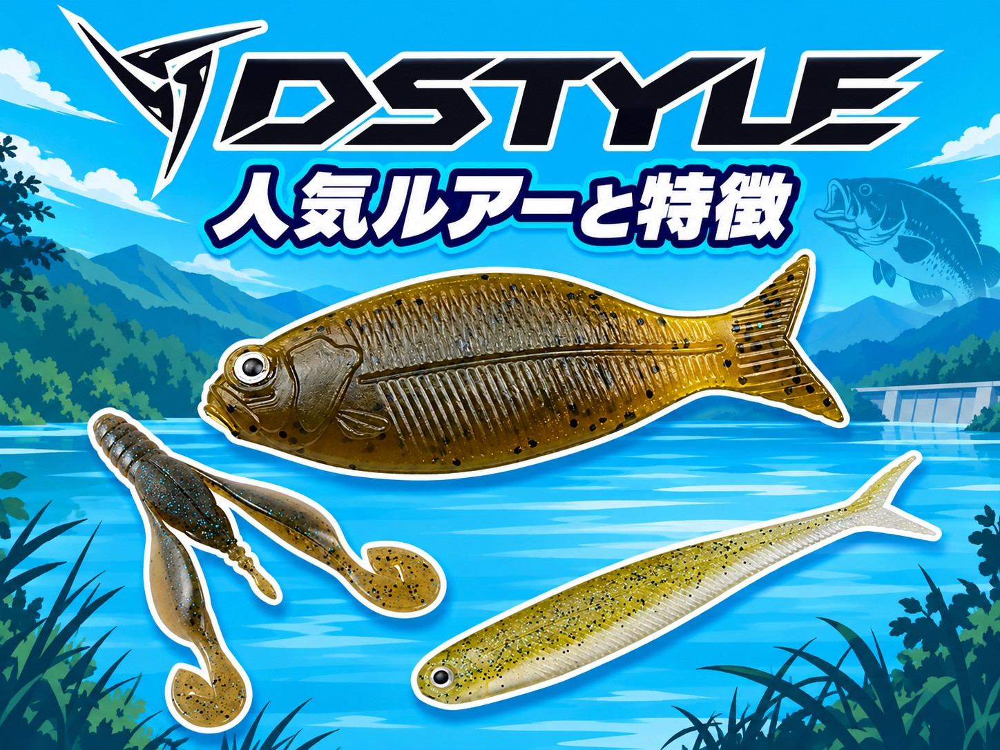
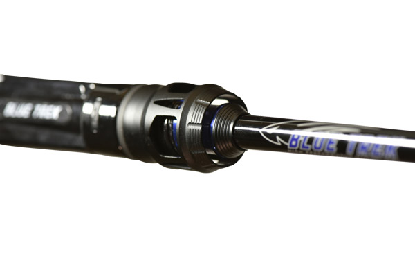

DSTYLE（ディスタイル）青木大介の「現場主義」から生まれるバスフィッシングブランド
2013年に河口湖と東京で起業。トーナメントの緊張感の中から得たフィードバックをもとに、ワーム・ルアー・ロッドを細部までこだわって作っています。特徴、そして人気のワーム・ルアー・ロッドをまとめました。

基本データ
| 会社名 | 株式会社DSTYLE |
|---|---|
| 代表 | 代表取締役CEO 青木大介 |
| 設立 | 2013年9月 |
| 本社 | 河口湖オフィス（支社：東京オフィス） |
| 得意ジャンル | バス（ワーム・ルアー・ロッド） |
| 代表製品 | トルキーストレート、ウイニングクロー、ヴィローラ、ギーラカンス、レゼルブ、ブルートレック |
| 第1弾製品 | D1 2.2インチ（2014年4月発売） |
| 公式 | dstyle-lure.co.jp |
※代表者・製品ラインナップは変わることがあります。最新情報は公式サイトでご確認ください。
DSTYLEの3つの特徴
1トーナメントからの「現場主義」
実際のフィールドでのテストを納得いくまで行い、緊張感のあるトーナメントシーンからのフィードバックをもとに細部までこだわる「現場主義」を掲げています。
2誰でも再現できるワーム
トルキーストレートは、軽くシェイクするだけで青木大介さんが求めるアクションを誰でも出せるストレートワーム。ネコリグのただ引きでミノーのように泳ぐ「巻きネコ」でも知られています。
3ジャッカルとの共同開発
2017年4月には、JACKALLとの共同開発による初のハードベイト「RESERVE（レゼルブ）」を発売。TNバイブレーションには、青木大介さん監修のコラボカラーもあります。
代表の青木大介
青木 大介
DSTYLE 代表取締役CEOJB TOP50で2年連続の年間優勝（A.O.Y.）を果たしたトーナメントアングラー。代名詞は「早いフィネス」。アメリカへ舞台を移すまでに、日本のあらゆるフィールドでトーナメントや取材を重ねてきました。
青木 唯
プロデューサーエラストマーワーム「ギーラカンス」をプロデュース（青木唯さんプロデュース第3弾）。
DSTYLEの人気ワーム・ルアー
DSTYLEはワームを中心に、ハードルアーやロッドも出しています。

TORQUEE STRAIGHT（トルキーストレート）4.8インチストレートワーム
上下非対称のプラグのようなボディで、大きく水を押すトルクフルなアクションを出すストレートワーム。ネコリグの軽いシェイクで大きな3Dアクションが出て、ただ引きではミノーのように泳ぐ「巻きネコ」にもなります。
👉 詳しくは トルキーストレート4.8インチの解説記事 へ

Winning Craw（ウイニングクロー）3.6インチクローワーム
フォール中も着底後も、爪とアームがしっかり動いてバイトを誘う全方位型のクローワーム。アーム先端の接続部をカットすると、軽いシンカーでも動くようになります。
👉 詳しくは ウイニングクロー3.6インチの解説記事 へ

VIROLA（ヴィローラ）4インチシャッドテールワーム
小刻みに揺れるVテールと、食わせのロールを生むボディバランスのリアル系ワーム。中層スイミング、I字系、ピクピク系、ソフトジャークなど、あらゆるテクニックに対応します。
👉 詳しくは ヴィローラ4インチの解説記事 へ

GEELACANTH（ギーラカンス）4インチエラストマーワーム
青木唯さんプロデュースの「究極のデロピニスト」。エラストマー素材のDURAVITYシリーズならではの、デロンデロンとしたエスケープギルアクションで、ビッグバスの本能を刺激します。
👉 詳しくは ギーラカンス4インチの解説記事 へ

※スペックは代表的なサイズです。リニューアル等で変わる場合があります。
画像出典:DSTYLE公式HP
DSTYLEのロッド「BLUE TREK」
DSTYLEのロッドは、青木大介さんのジャパントレイルの経験をフィードバックした「BLUE TREK（ブルートレック）」。スピニング・ベイトのモデルがそろっています。

BLUE TREK（ブルートレック）バスロッド
青木大介さんの代名詞「早いフィネス」に必要な、キャスト性能・操作性・感度・パワーを追求したロッドシリーズ。不要な部分を徹底的に削って、性能の向上とコストの削減を両立しています。
まず1本なら、ライトリグからライトプラグまで使えるスーパーオールラウンドモデル「DBTS-61UL+-S」がおすすめです。
👉 詳しくは ブルートレックの解説記事 へ
最初の1つの選び方
- まず1つ選ぶなら → トルキーストレート4.8インチ（ネコリグ）
- カバーを撃つなら → ウイニングクロー3.6インチ
- 中層・I字系なら → ヴィローラ4インチ
- ビッグバス狙いなら → ギーラカンス4インチ
- ロッドを1本選ぶなら → ブルートレック DBTS-61UL+-S
よくある質問
DSTYLEはどこのメーカー？
2013年9月に河口湖と東京で起業した、株式会社DSTYLEのブランドです。代表は青木大介さん。
読み方は？
「ディスタイル」と読みます。
ジャッカルとの関係は？
共同開発でルアーを出しています。第1弾は2017年4月発売のトップウォーター「RESERVE（レゼルブ）」です。